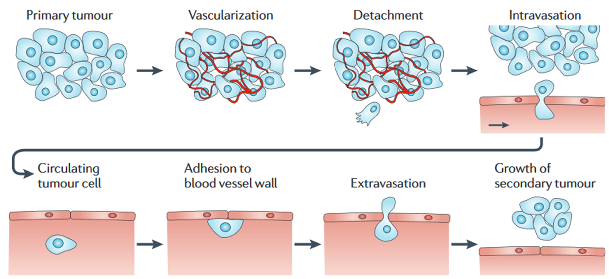

Research
Physics of cancer
I am interested in how the extracellular environment affects internal states of cells. One of the focuses is how the stiffness of the surrounding matrix. Matrix stiffness is a critical factor deciding cell fate, and the same cells can acquire different properties on different extracellular matrix. My group aims to study this question focusing on how the information of the extracellular matrix is stored in the cell.
Understanding this is critical in the tumor progression as aggressive tumor cells often invade and migrate into other tissues, known as metastasis (Wirtz et al (2011) Nat Rev Cancer). I am using yeast and human cells to tackle this, and yeast cells, due to easy genomic manipulation and faster growth, provide unique opportunities over human cells. Some of the specific questions that we are interested in are: 1) how the extracellular matrix stiffness affects the chromatin landscape and heterochromatin organization and 2) how the matrix stiffness contributes to the tumor aggressiveness.
Genome organization

I am interested in how the genome organization facilitates the coregulation of multiple pathways. This is critical for cell survival as cells often have to change the gene expression of thousands of genes rapidly in response to environmental stimuli or stress. Previously, I showed that the one-dimensional organization of the genome is critical for co-regulation of multiple pathways (Joh et al, under review).
Following up on this, I plan to systematically access 1) if the disruption of such genome organization leads to the loss of coherence among well-characterized pathways in human and 2) how such disruption affects the patient survival in various human diseases. Also, I am interested in how the 3D genome organization facilitates crosstalk between different chromosomes.